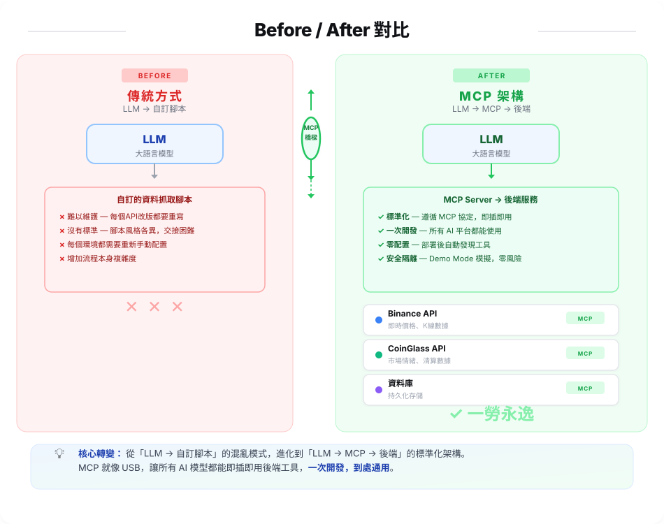
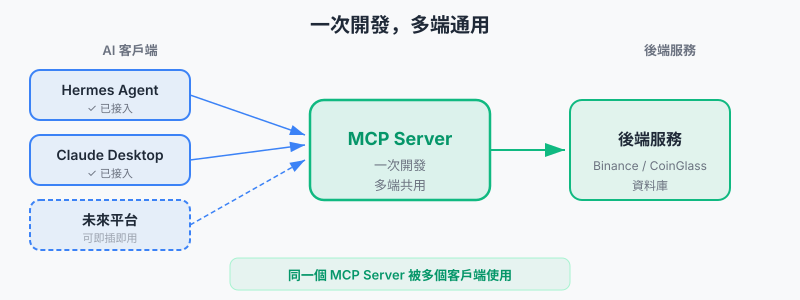

加密貨幣
交易所 對接AI智能體
第13組
組員: 黃正宇
以 MCP 為核心的 AI Agent 一體化插件
「讓你的 AI 在虛擬市場裡面遨遊天際」
傳統 AI 整合專案
與MCP 架構的差異。

MCP 到底是
什麼東西？
MCP (Model Context Protocol) 是由 Anthropic 提出的開放標準，讓 AI 模型能安全地連接並使用外部工具。
沒有 MCP 之前
每個 AI 工具要寫一套專屬整合
ChatGPT 一套、Claude 一套、Gemini 一套
開發者疲於維護多個版本
有了 MCP 之後
寫一次 MCP Server，所有 AI 都能用
像是 USB — 插上去就能用
一次開發，到處通用
📡 JSON-RPC 2.0 通訊協定
POST /mcp HTTP/1.1
Content-Type: application/json
{
"jsonrpc": "2.0",
"id": 1,
"method": "tools/call",
"params": {
"name": "get_analyze_RMMA_singal",
"arguments": {
"symbol": "BTCUSDT"
}
}
}
這個系統
能做什麼？
🎯 功能目標
透過自然語言與加密貨幣市場進行互動
根據你的指示執行你的交易計畫，甚至全自動進行交易
讓 AI Agent 可以理解走勢，"看"到K線
🚀 設計理念
插件化：一次開發，所有支持 MCP 的 AI 平台都能使用
標準化：從內到外的通訊使用統一 JSON 模板定義，資料鏈路簡單易讀
輕便性：輸出結果已標準化與過濾，只留下需要的資訊，讓 AI 容易理解數據，同時減少不必要token消耗
易擴展：模塊化設計，輕鬆新增更多工具，端點，數據源，處裡邏輯
整體架構流程。

為什麼選擇
MCP 標準化？
✅ 一次開發，處處可用
寫一個 MCP Server 後，Hermes、OpenClaw、Claude
Cursor 都可以一鍵接入
✅ 標準化工具描述
AI 自動理解工具功能，不需要額外教學，你只需要給出任務目標
讓 Agent 自己探索!
✅ 模組化設計
新增功能時只需修改 MCP Tool 定義，當 Agent 刷新後將自動取得新工具列表

AI Agent 能透過
我們的工具做什麼？
📊 查詢幣別資訊
get_symbol_info — 獲取幣別基本資料、交易對資訊
📈 技術分析訊號
get_analyze_RMMA_singal — 多週期共振分析，回傳買賣訊號與分數
💰 推薦倉位大小
get_recommended_size — 根據風險參數自動計算倉位
👛 查詢錢包餘額
get_wallet_balance — 查看當前資產分佈
📝 執行下單
place_market_order — 直接開立多單或空單
🛡️ 設定停損
set_stop_loss — 自動設定停損保護
🔧 Tool Schema 定義(JSON)
{
"name": "get_recommended_size",
"description": "根據目前餘額與傳入的槓桿，計算推薦的 USDT 名義持倉價值", ### 給Agent看的工具描述
"inputSchema": {
"type": "object",
"properties": {
"leverage": {"type": "integer", "description": "預計使用的槓桿倍數", "default": 10} ### 定義可傳入的參數與用途
},
"required": ["leverage"] ### 告訴Agent必須傳入的參數
}
}
從原始數據到
AI 可用的過程。
從 Binance、CoinGlass 等來源拉取原始數據（倉位、價格、成交量、訂單簿...）
使用簡易匹配或 Pandas 進行數據清洗、時間對齊、缺失值處理
按照呼叫的端點對資料進行專門的精簡優化，去除所有不必要的元素，讓 Agent 拿到乾淨易懂 Json 文本
將結果包裝成標準工具格式，AI Agent 呼叫就能拿到結果
⚡ FastAPI → MCP 橋接範例
# FastAPI 後端端點
@app.post("/mixed_RMMA_singal")
async def signal_test(req: symbolRequest):
"""綜合信號分析 — RSI + MFI + MACD"""
signals = await signal_back.singals_RMMA_entry(
symbol=req.symbol
)
return signals
# MCP Server 包裝層 (獨立 Python 腳本)
def execute_tool(name, arguments):
if name == "get_analyze_RMMA_singal":
return requests.post(
f"{BACKEND_URL}/mixed_RMMA_singal",
json=arguments
).json()
背後用了
什麼技術。
Python 3.11 + FastAPI 0.115+
高性能非同步框架，自動生成 API 文件
選型理由：原生 async、type hint 成熟、生態系完整
Pandas TA 0.3.14p
130+ 技術指標函式庫
選型理由：與 Pandas 無縫整合、MACD/RSI/MFI 還有更多常見指標一鍵計算
MCP SDK 1.0+
標準 MCP 通訊協定
選型理由：Anthropic 官方標準、即插即用
Demo Mode
demo模式可離線運行，調用時返回dummy資料
用於快速測試整體邏輯與功能
工具範例展示
這是一個基礎的量化分析算法，提供給 AI Agent 使用的其中一個指標。
設計目的是讓 Agent 能同時「看」多個時間週期。
定方向 — 判斷長期趨勢多空
定環境 — 觀察中期動能強弱
定點位 — 找出精確進出場時機
🤖 目的是讓 Agent「看懂」市場
我們把三層共振結果包裝成結構化輸出，讓 Agent 能直接透過工具理解市場狀態，而非直接塞入數千份的K線。
結構化輸出範例
{
"symbol": "BTCUSDT",
"summary": {
"decision": "STRONG_SELL",
"score": -3,
"message": "❄️ 極強共振：空頭趨勢 + 頂部背離",
"action": "SELL"
},
"layers": {
"L1_Trend_4H": {
"direction": "bearish",
"price": 63040,
"ema200": 68066
},
"L2_Context_1H": {
"environment": "squeezing",
"bb_width": 0.017
},
"L3_Trigger_30m": {
"trend": "看多",
"support_zone": [62344, 62421],
"resistance_zone": [63286, 62994],
"latest_10_rsi": [53.1, 51.9, 50.9, 54.4, 54.5, 57.0, 50.2, 51.4, 62.7, 60.5],
"latest_10_mfi": [73.5, 76.3, 78.5, 77.5, 80.1, 80.5, 80.3, 85.8, 86.7, 78.6]
}
}
}
這是實際呼叫 /mixed_RMMA_singal 回傳的結構。Agent 會根據 L1 大週期方向、L2 環境狀態、L3 觸發訊號綜合判斷。
AI Agent 會如何
使用我們的工具。
幫我分析 BTC 技術面
好的，先取得 BTC 基本資訊...
→ call get_symbol_info("BTCUSDT")
現在進行多週期共振分析...
→ call get_analyze_RMMA_singal("BTCUSDT")
📊 收到結構化訊號: STRONG_SELL (score: -3)
結論: 極強做空訊號
4H 空頭趨勢 + 1H 收縮 + 30m 短期反彈失敗
建議觀望或輕倉做空，支撐區 62344
🔧 Agent 實際呼叫的 MCP 流程
// Step 1: 取得幣別資訊
{
"name": "get_symbol_info",
"arguments": { "symbol": "BTCUSDT" }
}
// ← 回傳: 合約規格、最小下單量、當前價格
// Step 2: 多週期共振分析
{
"name": "get_analyze_RMMA_singal",
"arguments": { "symbol": "BTCUSDT" }
}
// ← 回傳 (簡化):
{
"summary": {
"decision": "STRONG_SELL",
"score": -3,
"action": "SELL"
},
"layers": {
"L1_4H": { "direction": "bearish" },
"L2_1H": { "environment": "squeezing" },
"L3_30m": { "trend": "看多", "support": 62344 }
}
}
請求的
完整流程。
🔌 FastAPI 端點 → MCP Tool 對應
MCP Tool → FastAPI Endpoint ───────────────────────────────────────── get_symbol_info → POST /get-symbol-info get_analyze_RMMA_singal → POST /mixed_RMMA_singal get_wallet_balance → GET /wallet-balance get_recommended_size → POST /recommended-size place_market_order → POST /order set_stop_loss → POST /set-stop-loss // 每個端點都經過資料過濾與格式化 // Agent 拿到的是乾淨的 JSON，不是原始 API 回應
接下來
還能做什麼。
- 支援更多交易所（OKX、Bybit...）
- 加入更多技術指標與自訂策略
- 整合更多 MCP 插件（新聞情緒、社群監控）
- 回測功能，記錄下交易對
- 將 MCP Server 轉為可對任何用戶提供的公開服務 (讓用戶帶上自己的key)
接下來展示
三個功能。
AI Agent 透過 MCP 呼叫 get_analyze_RMMA_singal，取得多週期共振評分，查看 Agent 對這組評分有甚麼見解
指示 Agent 進行下單，同時設定止盈與止損， Agent 將使用配套的工具自行決策應該使用多少金額，止損點，槓桿大小
指示 Agent 查看持有的倉位，看他會給出什麼樣的建議
⚡ 實機演示 ⚡
1. 展示DEMO環境的端點互動
2. 展示一個投入生產環境的 AI Agent
今天帶
走了什麼。
感謝聆聽
Q & A
GitHub
github.com/uraniumchonk/trading-demo-report
html簡報
github.com/alchaincyf/huashu-design